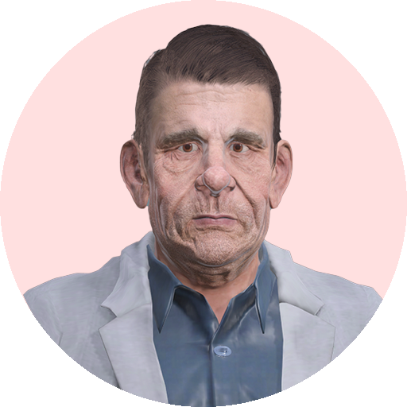
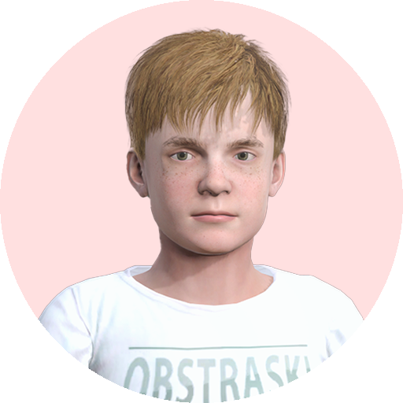
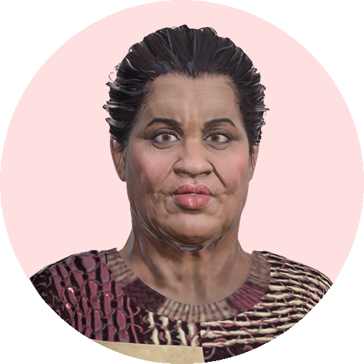

ReanimatieResuscitation.
& AED
Oefen de protocollen rondom basic life support en het gebruik van de AED. Speel verschillende realistische scenario's met elk hun eigen leerdoelen, veilig, leuk en met directe feedback.Practise the protocols around basic life support and AED use. Play several realistic scenarios, each with their own learning objectives, safe, engaging and with instant feedback.
Zo ziet de reanimatie & AED-module eruit.This is what the resuscitation & AED module looks like.
Van een man die onwel wordt tot reanimatie bij een kind, beelden uit de echte scenario's. Klik op een beeld om het groot te bekijken.From a man collapsing to resuscitating a child, images from the real scenarios. Click an image to view it larger.
Wat je na deze module beheerst.What you'll master after this module.
- Weet hoe je het bewustzijn controleert.Know how to check responsiveness.
- Weet hoe je de luchtweg opent.Know how to open the airway.
- Weet hoe je de ademhaling controleert.Know how to check breathing.
- Weet hoe je moet reanimeren (tempo & diepte).Know how to perform CPR (rate & depth).
- Weet wanneer en hoe je de AED toepast.Know when and how to use the AED.
Drie realistische scenario's, elk met eigen leerdoelen.Three realistic scenarios, each with their own objectives.

Onwel in de lobbyCollapse in the lobby
Een oudere man raakt plotseling buiten bewustzijn in de lobby van een kantoorgebouw.An older man suddenly loses consciousness in the lobby of an office building.

Reanimatie bij een kindResuscitating a child
Een minderjarige jongen raakt buiten bewustzijn na het krijgen van een schok.A young boy loses consciousness after receiving an electric shock.

Op een openbare locatieIn a public place
Een vrouw raakt buiten bewustzijn op een openbare locatie.A woman loses consciousness in a public place.
Interactief, virtueel en altijd beschikbaar.Interactive, virtual and always available.
InteractiefInteractive
Krijg direct feedback op je keuzes en haal een zo hoog mogelijke score door de juiste acties te maken.Get instant feedback on your choices and aim for the highest possible score by taking the right actions.
VirtueelVirtual
Oefen veilig in een gesimuleerde, realistische omgeving om het protocol goed onder de knie te krijgen.Practise safely in a simulated, realistic environment to truly master the protocol.
Altijd beschikbaarAlways available
Oefen tijd- en plaatsonafhankelijk via computer, telefoon of tablet, zo vaak als nodig.Practise anytime, anywhere on computer, phone or tablet, as often as needed.
Voor iedereen die vakbekwaam moet blijven in reanimeren.For everyone who needs to stay competent in resuscitation.
Bhv-medewerkersWorkplace first responders
Houd je reanimatie- en AED-vaardigheden op peil voor de bedrijfshulpverlening.Keep your CPR and AED skills up to standard for workplace emergency response.
Ehbo'ersFirst aiders
Oefen het BLS-protocol zo vaak als nodig om zeker te handelen bij een noodgeval.Practise the BLS protocol as often as needed to act with confidence in an emergency.
Vakbekwame professionalsQualified professionals
Voor iedereen die blijvend vakbekwaam moet zijn met betrekking tot reanimeren.For everyone who must remain professionally competent in resuscitation.
De reanimatie.module live zien?See the resuscitation.module live?
We laten je in een korte demo een echte casus spelen, en denken mee over hoe je deze module bij jullie achterban inzet.In a short demo we'll let you play a real case, and think along about how to use this module with your audience.